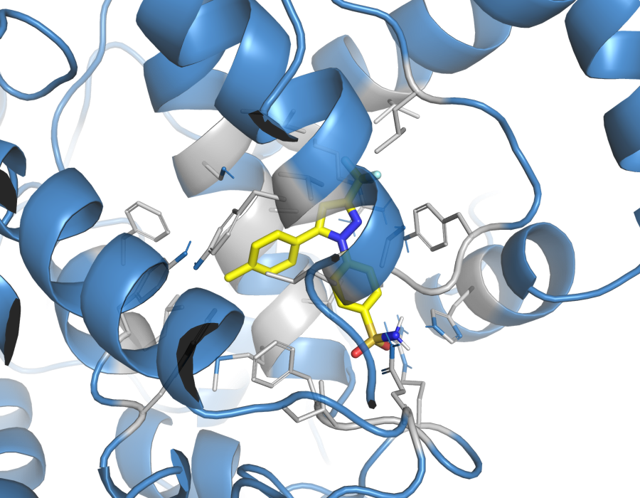
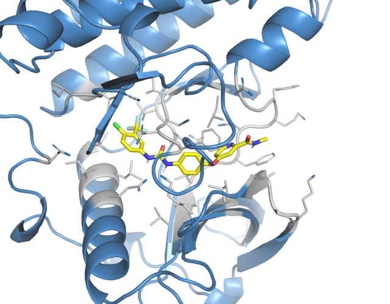
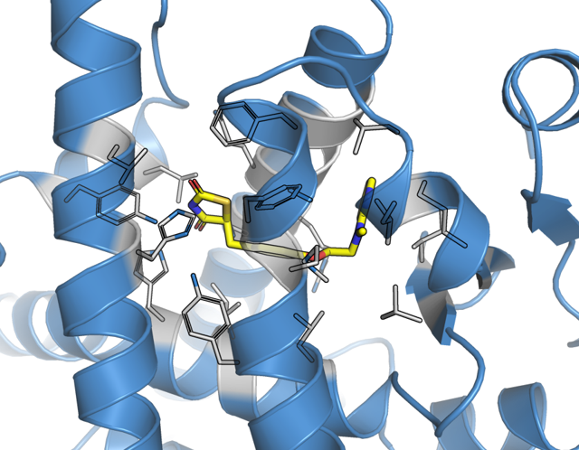

A computational drug-discovery pipeline screening 7 bioactive compounds against COX-2, VEGFR-2 and PPAR-γ — from SwissADME and SwissTargetPrediction through AutoDock Vina docking and comparative analysis.
The candidate set comprises seven bioactive compounds spanning flavonoids, a flavonolignan pair, and a phytosterol — selected from the phytochemical profile of Anastatica hierochuntica, a desert "resurrection plant" long used in traditional medicine.
This library feeds into ADME screening and target prediction before any structure-based work begins.
Each compound was submitted to SwissADME to evaluate physicochemical properties, pharmacokinetic behaviour, and oral bioavailability before committing to structure-based docking.
The flavonoid aglycones and isosilybins (quercetin, kaempferol, luteolin, naringenin, isosilybin A/B) are fully Lipinski-compliant with high GI absorption and a 0.55 bioavailability score. β-Sitosterol carries one Lipinski violation (MLOGP>4.15, reflecting its lipophilicity) but still scores 0.55. Rutin, the glycoside, shows the expected TPSA / H-bond-donor related violations. All seven were carried forward for target prediction and docking.
Per-compound target probability rankings from SwissTargetPrediction consistently surfaced three targets across the library — selected as the comparative docking panel:
PPAR-γ was the top hit for the flavonols (quercetin, kaempferol, luteolin, ≈0.88–1.0 probability) — pointing toward an M1→M2 macrophage polarization mechanism. COX-2 / PTGS2 was prominent for rutin (≈0.65) and the isosilybins. VEGFR-2 / KDR ranked highest for isosilybin A and B (≈0.40–0.43), consistent with a pro-angiogenic wound-healing role.
Each receptor structure was retrieved from the PDB, cleaned in PyMOL (solvent and co-crystal ligand removed), and the bound reference ligand was extracted separately to define the docking grid box.



Grid box centre and dimensions were derived from each extracted reference ligand using PyMOL's get_extent / get_position. For PPAR-γ (4EMA): centre (14.784, 7.082, 44.504), size 20×20×22 Å.
All 7 AH compounds plus the 3 co-crystal reference ligands (celecoxib, sorafenib, rosiglitazone) were converted from SDF/PDB to PDBQT format ahead of docking.
This conversion step assigns AutoDock atom types and Gasteiger partial charges — required by Vina's scoring function — for every ligand and reference compound.
Each of the 7 AH compounds — plus each receptor's own co-crystal reference ligand — was docked into its fixed grid box using AutoDock Vina, run through PyRx / MGLTools.
For each complex, the lowest-energy binding mode (kcal/mol) was carried forward into the affinity comparison and residue-interaction analysis below.
Best-pose binding affinities (kcal/mol) for all seven compounds against each target. Each row shows the top 5 closest residue contacts (≤3.5 Å) — tap "show all contacts" for the complete interaction list. The dashed row is the receptor's own co-crystal reference ligand.
Benchmarking the strongest AH binder per target against its receptor's co-crystallized clinical drug:
The isosilybin pair (A and B) and β-sitosterol emerge as the most promising leads — isosilybin A in particular rivals an approved COX-2 inhibitor at the binding-affinity level, supporting further evaluation (e.g. MM-GBSA, MD simulation, in vitro assay).